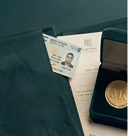

Гражданство Израиля через брак: условия и порядок получения



Пара подаёт заявление и необходимые документы. МВД начинает проверку обстоятельств отношений и возможности предоставить иностранному супругу статус. На этом этапе иностранному супругу может предоставляться временный статус B/1.
жителя A/5
После перехода на основную ступенчатую процедуру иностранный супруг получает статус A/5, который необходимо регулярно продлевать.
Именно этот период составляет основную часть пути к возможному получению гражданства.
При приближении к завершению срока МВД оценивает, выполнены ли условия и может ли процедура быть завершена предоставлением гражданства или статуса постоянного жителя.
Если заявитель выбирает гражданство и МВД подтверждает выполнение требований, проводится завершающая процедура натурализации.
После получения гражданства оформление израильского удостоверения личности и паспорта является отдельным административным этапом.
Перед завершением процедуры необходимо проверить, выполнены ли остальные условия.

Самый частый случай. Вы замужем за гражданином Израиля (или собираетесь) и хотите понять, как в итоге получить израильское гражданство: с чего начать, сколько ждать, что нужно на каждом этапе. Объясняем весь путь — от статуса до гражданства.
Вы гражданка Израиля, ваш партнёр — иностранец. Разбираем, как оформить ему статус и довести дело до гражданства, какие документы готовятся с вашей стороны, а какие — со стороны супруга.
Вы прошли часть пути и хотите понять, когда и на каких условиях открывается возможность гражданства. Разберём вашу текущую ситуацию и что осталось до его получения.

Здесь важно понимать принципиальную вещь. Для пар без зарегистрированного брака действует отдельная процедура МВД — и она ведёт к другому итогу.
По её завершении оформляется вид на постоянное жительство, а не гражданство. Сроки тоже длиннее: если партнёр — гражданин Израиля, процедура составляет три года со статусом B/1 и затем четыре года со статусом A/5. Если партнёр — постоянный житель, ещё дольше.
Это не значит, что путь закрыт: постоянный статус — устойчивое положение в стране. Но приравнивать его к гражданству через официальный брак некорректно, и мы говорим об этом сразу, а не после начала процедуры.
Если пара регистрирует брак уже в ходе процедуры, дело можно перевести на процедуру для супругов — с зачётом части пройденного пути. Как это работает в конкретной ситуации, нужно разбирать отдельно.
ваш путь к гражданству


Да. Ступенчатая процедура МВД распространяется как на официально зарегистрированных супругов, так и на пары, состоящие в гражданском браке (ידועים בציבור). Важно документально подтвердить реальность отношений и совместного проживания. Конкретный маршрут зависит от вашей ситуации — уточните при первом обращении.
Нет, это принципиально разные вещи. ДНК-тест в иммиграционном контексте используется исключительно для подтверждения биологического родства — например, отцовства или связи с гражданином Израиля. Он не доказывает принадлежность к еврейскому народу и не является основанием для репатриации сам по себе. Кроме того, для МВД нужен юридически оформленный тест — обычный медицинский анализ не подойдёт.
Стоимость зависит от вида и сложности дела. После первичного разбора ситуации мы объясняем условия сопровождения, что именно входит в работу офиса и какие этапы предстоят. Напишите нам — расскажем подробнее применительно к вашему случаю.
Нет. Мы работаем с клиентами по всему Израилю. Консультации проводим онлайн или в офисе. В отдельных случаях возможен выезд к клиенту — формат согласуется индивидуально при первом обращении.
Стараемся ответить в день обращения. У каждого клиента есть общий WhatsApp-чат с командой офиса — это значит, что ваш вопрос не зависит от того, занят ли один конкретный сотрудник. В праздничные дни время ответа может увеличиться — мы предупреждаем об этом заранее.
Адвокат Михаэль Коберг зарегистрирован в Коллегии адвокатов Израиля. Вы можете проверить его лицензию в официальном реестре — ссылка на профиль есть на странице команды. У нас официальный сайт, реальный офис и возможность очной встречи до принятия какого-либо решения.
Лицензия адвоката в официальном реестре Коллегии адвокатов Израиля